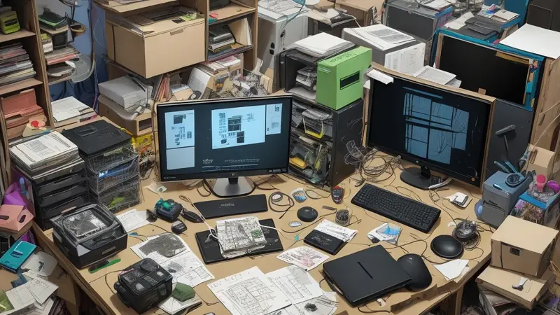
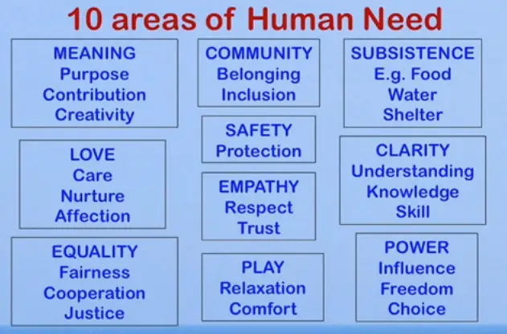
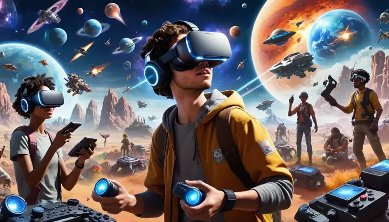
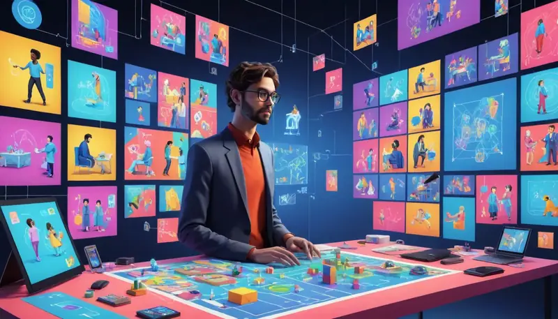
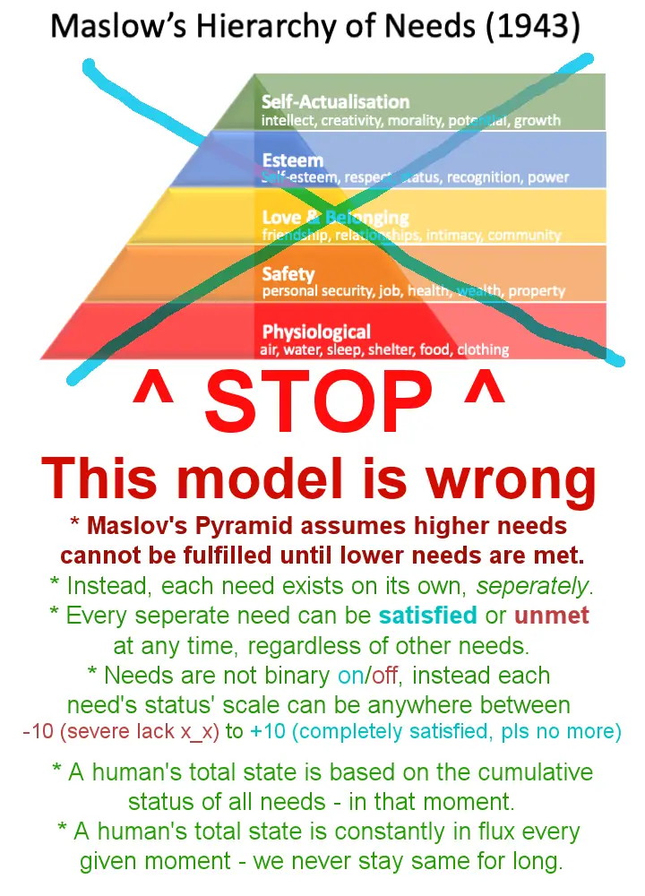
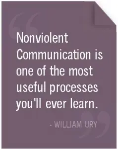
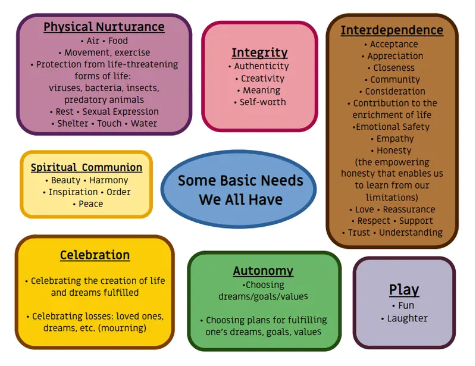
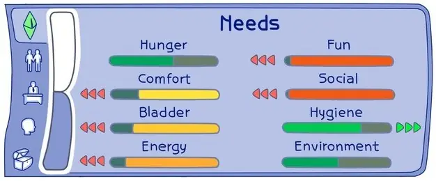

People can’t seem to define “fun”
I want to dispel a common belief that is still prevalent in both developers' minds and the public's mind; the idea that "games are entertainment and they are fun".
Usually if I confront someone about what they mean by "fun", I first get some cheap answers like "because it's satisfying" but if I press on and ask them why it is fun or satisfying, they draw a blank and struggle to answer anything concrete.

Because of this fundamental issue where people don't even know what "fun" means or what is behind it they end up creating garbage game design.
It also affects the public perception where it's made easy to dismiss games as "silly throwaway toys/thrills" which causes society to look down upon those playing video games as not a valid productive activity that is of any benefit to a human being.
Unfortunately game designers are at fault for making this perception valid by making games that do the thing they are being accused of. In the end nobody wins; not the gamedev, not society nor the gamer. The games industry stagnates and suffers from being stuck in a pit. It's a self-fulfilling prophecy.
Why can't people answer what "fun" is?
Lack of education or even suppression/corruption of education about fundamental human needs and human psychology is the key reason why people are unable to see what is actually behind "fun".
Partly this is deliberate because humans are easier to manipulate, control and make obedient to authority when they don't have vital information and are made reliant on an authority figure for answers. Partly it is simply due to the incompetence of society, no one taught them so they just don't know.
I've seen some "industry experts" and "skilled game designers" try to compensate for it by creating all kinds of convoluted mental gymnastics to explain why people play games, what makes games good, what is "fun", why people behave a certain way or what makes people stay playing a game instead of moving on to another one.
Most of it is total bullshit and overcomplicates something that is very simple.
Games are need satisfiers
This is key take away:
Fun is the satisfaction of basic fundamental human needs.
Here’s a simplified chart to show them:

The fundamental human needs are universal and apply to every human being, no matter where they are or who they are. They are common to everyone.
Anything that any human being does at any given moment is driven by their own fundamental human needs. I want to emphasize that this means *everything*.
Self fullness, a third lesser known alternative to selfishness or selflessness
There is often this concept of "selfishness" and "selflessness", but both are false and are often used to manipulate other people by fooling them into thinking that their needs are bad/sinful/dirty, when in reality it's just some prick trying to take advantage of you.
There's a third largely unknown concept called "self fullness" or "self fulfillment", which is what reality is; a human being is fulfilling their human needs - usually with the aim to do so in a way that causes least harm and most benefit both in the short and long term.
Concept like selfishness or selflessness are originally an attempt of a person to communicate to other people to be more considerate of their wellbeing and needs too, but it was easy to abuse and misinterpret that it eventually became a method of manipulation where someone tells someone else to be selfless so that they're easier to take advantage of, essentially fooling the other person to sacrifice themselves and make them think it's good for them to do so.
I had to cover the point of "self fullness" because there is a lot of indoctrination and false information that makes it difficult to see the far simpler nature of how human psychology really works.
The diverse power of video games for a person
So, people play games to satisfy their fundamental human needs. Those needs can be achieved by video games by offering an experience, tool, message, fantasy, platform, system or some other delivery mechanism that helps the player make their life better in real life.

Video Games provide interactivity, they can evoke emotions, they can show you something that otherwise is:
- unavailable.
- too expensive.
- too distant.
- too difficult.
- too dangerous.
- too consequential in real life.
They can relay information - be it skills, knowledge, story or factual data, they let you become anything/anyone/anywhere and do anything/everything/nothing.
You can be transported to another world, you can do things that are cool on screen but not in real life, you can transform into anybody you wish to and go beyond the human limitations. Although it is a virtual experience, it still feels very much real and that's what counts.
Often things seen and experienced in a virtual space - regardless if it was on a smartphone, console tv setup, a laptop/personal computer or even VR - it can still affect and benefit the real world in many tangible ways.
You - an architect of the future of humanity
As a game designer, you are an architect of the future of humanity, you can shape human behavior, you can empower people, help them become better stronger and smarter by creating game design and resulting products or services or content.
By identifying a new potential idea/framework/system/platform/experience that you stumbled upon and saw having potential to satisfy fundamental human needs through the medium of video games, you can create a product or service that focuses on that particular idea by leveraging the knowledge of fundamental human needs to understand human psychology and human beings to make design decisions that are guaranteed to be a step in the right direction for that project in particular.
Not only that, but you'll be able to identify other elements and opportunities within the project as you develop it that can further optimize and enhance the idea to an even better refined form.
Videogames are not entertainment inherently. That is merely one end result it can end up becoming but it's never the starting point to begin building a project - instead, the game's purpose manifests itself automatically based on its purpose.
The purpose of a game should always focus on the needs a game idea is trying to satisfy within the player.

As a game designer ask yourself;
"What fundamental human needs is my game project trying to fulfill in the player and how is it trying to do that?"
"How do I best serve the player to help them achieve the fulfillment of their human needs that I too felt when I was excited by the original game idea I had?"
"Is that idea even valid? Does it have any problematic elements that would cause it to go against itself and either fail to satisfy the needs I thought it would, violate other fundamental human needs in the process by accident or even violate the actual needs I'm trying to fulfill for the player with this idea/structure/system/mechanics?"
Fundamental human needs
No, it's not that Maslow's pyramid of needs, that thing is outdated and misleading. It assumes you can't fulfill needs higher in the pyramid without first fulfilling every need below it - this is false.

Originally fundamental human needs as a concept was coined by Manfred Max-Neef, an economist who deals with the complex challenges of how to structure systems of government, infrastructure, services, legislation and resource management for the benefit of all human beings.
Later, this definition of fundamental human needs was adopted into Nonviolent Communication (NVC) by Marshall Rosenberg, who simplified it enough for a layperson to understand it.
NVC in particular is a robust all-aspect system that includes tools, mindset, processes and solutions for understanding and communicating with human beings. Fundamental human needs are in the center of it, essentially being the core that pretty much explains human psychology like a clear-as-day blueprint.
I had come across a lot of different works/advice/guides/videos/tutorials/books/etc on communication, understanding people/behavior, but none came anywhere as close as NVC in terms of how bulletproof yet simple it was. I will argue it is the best resource for any human being to discover.

I will do more posts about NVC in the future, but as a tool in game design - or frankly any field of life/work/art/relationships/engineering - it is the holy grail of tools, methods and processes to make the best game design possible, no matter the project.
It is universally excellent. I cannot emphasize this enough.
The human needs themselves are these

They operate like individual independent progress bars that increase or decrease, with their cumulative total affecting the state of a person at that particular moment in time. Needs constantly go up and down and no moment in any given time is the same, people's state is always changing every second, minute and hour.

If you've ever played The Sims, the "need bars" of a sim character in that game are somewhat close to how fundamental human needs work; they all increase and decrease independently of each other with their overall combined state reflecting the person’s current demeanor. It is always in flux.
A person can both have a stronger need for meaning yet be incredibly thirsty of water at the same time - making the person do something that might seem illogical where they ignore the water and instead do the thing that satisfies their need for meaning. Needs are not mutually exclusive like Maslow's outdated pyramid would try to suggest.
Video games in their essence are strategies to meet fundamental needs - just as any other action a human being does. Games don't somehow break out of that, it's all part of the same continuum.
Strategies to meet needs - this is the part we often fail at
Strategies to meet needs can be excellent, useless, awful, mixed or confused. While fundamental human needs are universal, common and unchangeable for every human in the world, the way we try to meet those needs ends up being something that is always somewhat experimental.
We humans come up with ideas, fantasies, systems, tools... Anything as a new way to satisfy our fundamental human needs. Something that is better than previously, more refined, more varied, bigger, deeper or otherwise has some element that makes it worth making that will potentially make old strategies of meeting needs obsolete.
Needs can be met individually or in bundles, but some needs are in opposite directions and you cannot satisfy them both with the same strategy. You cannot relax if your strategy is about excitement, tension and action. The opposite applies too; you can't meet the need for excitement and adrenaline with something that is designed to relax a person.
Every product, service or content always serves a purpose. The better it understands this and focuses on that purpose with all its power, the better that thing becomes at fulfilling a need or a set of adjacent needs.
If you're making a game about empowerment as its purpose, then every design decision should support it - including game mechanics, user interface, menus, texts, characters, story, abilities, systems, presentation, audiovisual and even marketing/publishing/community should be devised from the point of empowering the player/customer.
If you're making a game about companionship and love, then everything should revolve around that purpose in every aspect of the project both in-game and outside the game.
If the game is about teaching something or showing something worth geeking out about, same thing again. Every single piece, no matter how small, should be designed to contribute to a project's purpose.
Concretely it's about how something looks, how it sounds, how it controls, how it communicates about itself - every single element of a project can be produced in a way that emphasizes the emotion that is most suitable for the purpose of a project.
If you can grasp this concept and its importance as a game designer, you'll be able to see a whole different way to approach making games or anything that will result in far superior products, services and content.
After all, games are made for human beings by human beings. If you can understand the basic psychology of a human being, you will be able to instinctively know the correct design decision at every stage of the project.
If you as a developer have a particular goal in mind when making a project, knowing about fundamental human needs will not only help you achieve that goal but also help you notice if it was a valid goal to begin with.
What usually goes wrong with strategies in game design
Games should be need satisfiers but often due to horrible game design they fail to do so.
Ideally a game idea would identify its purpose, what needs it is trying to solve and how it can maximize every aspect of itself to cater to those needs that it could realistically serve, while avoiding everything that would go against delivering satisfaction of those needs.
Sadly due to awful game design education or even complete lack of it, game devs usually either try to:
- Make a game trying to serve every need at once, but failing to satisfy any of them.
- Make a game that is bipolar, trying to pull in two completely opposite directions by trying to satisfy two wildly different needs by using a format that doesn't let either direction shine.
- Just try to follow existing games or traditions as a template without understanding why they worked in the original success story and just hope for the best, usually resulting in lame crap. On top of that they might not even question if those traditions or existing games were any good to begin with and if they were the wrong approach even back then.
- They manage to get lucky with a small prototype that at first manages to succeed in delivering satisfaction of needs, but because they don't understand or know about fundamental human needs, they end up ruining their project with poor decisions later or just fail to see the potential and thus never seize the opportunity they had stumbled upon.
- Not caring about the customer at all but making their game for egotistical purposes to gain external validation and make themselves look good.
- Worse yet, not only not caring about the customer but also actively seeking to abuse and exploit them to forcefully extract as much money or other benefits from them while creating a game experience that does not want to empower or assist the player or improve their lives, but to damage and drain them like a vampire.
Especially for the last two there is a very strong emphasis on impressive audiovisual presentation to mask the game design incompetence and hollowness/shallowness that they have. Sometimes people have called this "soullessness" of a game when trying to describe it. The amount of heavy lifting visual and audio artists do to still have some of these games sell well is staggering.
There is also the simple reality of people making games for purposes of just money by repeating a particular strategy that worked in the past, but it is hollow and unsustainable to do so. It will also be easily pushed aside in favor of any project that doesn't go for this falsely attributed "safe" route.
Talk about it
Questions, disagreements and ideas of your own are all welcome. Discuss this article with other readers on the Reactorcore Games Discord, follow new articles and dev news on Patreon, or write to me directly.